| (15.58) |
When dealing with non-linear networks the number of equation systems to be solved depends on the required precision of the solution and the average necessary iterations until the solution is stable. This emphasizes the meaning of the solving procedures choice for different problems.
The equation systems
| (15.58) |
| (15.59) |
The elements
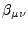 of the inverse of the matrix  are
are
| 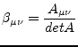 | (15.60) |
| 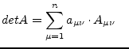 | using the 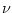-th column | (15.61) |
| 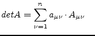 | using the -th row | (15.62) |
This method is called the Laplace expansion. In order to save
computing time the row or column with the most zeros in it is used for
the expansion expressed in the above equations. A sub determinant
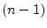-th order of a matrix's element
of  -th order is
the determinant which is computed by cancelling the -th row and
-th column. The following example demonstrates calculating the
determinant of a 4th order matrix with the elements of the 3rd row.
-th order is
the determinant which is computed by cancelling the -th row and
-th column. The following example demonstrates calculating the
determinant of a 4th order matrix with the elements of the 3rd row.
| 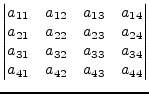 | 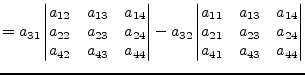 | (15.63) |
| 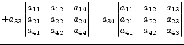 |
This recursive process for computing the inverse of a matrix is most easiest to be implemented but as well the slowest algorithm. It requires approximately 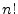 operations.
The Gaussian algorithm for solving a linear equation system is done in two parts: forward elimination and backward substitution. During forward elimination the matrix A is transformed into an upper triangular equivalent matrix. Elementary transformations due to an equation system having the same solutions for the unknowns as the original system.
| 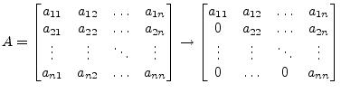 | (15.64) |
The modifications applied to the matrix A in order to achieve this transformations are limited to the following set of operations.
The transformation of the matrix A is done in 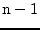 elimination steps. The new matrix elements of the k-th step with 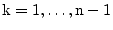 are computed with the following recursive formulas.
| 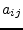 | 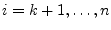 | and |
(15.65) | |
| 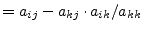 | and 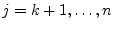 | (15.66) | ||
| 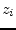 | 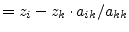 | (15.67) |
The triangulated matrix can be used to calculate the determinant very easily. The determinant of a triangulated matrix is the product of the diagonal elements. If the determinant 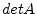 is non-zero the equation system has a solution. Otherwise the matrix A is singular.
| 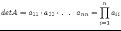 | (15.68) |
When using row and/or column pivoting the resulting determinant may
differ in its sign and must be multiplied with 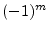 whereas  is
the number of row and column substitutions.
is
the number of row and column substitutions.
The Gaussian elimination fails if the pivot element 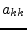 turns to
be zero (division by zero). That is why row and/or column pivoting
must be used before each elimination step. If a diagonal element
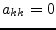, then exchange the pivot row 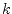 with the row 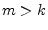
having the coefficient with the largest absolute value. The new pivot
row is  and the new pivot element is going to be 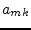. If no
such pivot row can be found the matrix is singular.
and the new pivot element is going to be 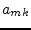. If no
such pivot row can be found the matrix is singular.
Total pivoting looks for the element with the largest absolute value within the matrix and exchanges rows and columns. When exchanging columns in equation systems the unknowns get reordered as well. For the numerical solution of equation systems with Gaussian elimination column pivoting is clever, and total pivoting recommended.
In order to improve numerical stability pivoting should also be applied if 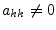 because division by small diagonal elements propagates numerical (rounding) errors. This appears especially with poorly conditioned (the two dimensional case: two lines with nearly the same slope) equation systems.
The solutions in the vector x are obtained by backward substituting into the triangulated matrix. The elements of the solution vector x are computed by the following recursive equations.
| 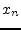 | (15.69) | ||
| 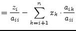 | 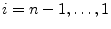 | (15.70) |
The forward elimination in the Gaussian algorithm requires approximately 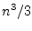, the backward substitution 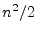 operations.
The Gauss-Jordan method is a modification of the Gaussian elimination. In each k-th elimination step the elements of the k-th column get zero except the diagonal element which gets 1. When the right hand side vector z is included in each step it contains the solution vector x afterwards.
The following recursive formulas must be applied to get the new matrix elements for the k-th elimination step. The k-th row must be computed first.
| 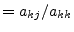 | 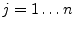 | (15.71) | |
| 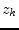 | 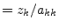 | (15.72) |
Then the other rows can be calculated with the following formulas.
| 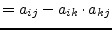 | 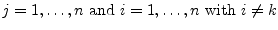 | (15.73) | |
| 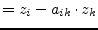 | 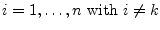 | (15.74) |
Column pivoting may be necessary in order to avoid division by zero. The solution vector x is not harmed by row substitutions. When the Gauss-Jordan algorithm has been finished the original matrix has been transformed into the identity matrix. If each operation during this process is applied to an identity matrix the resulting matrix is the inverse matrix of the original matrix. This means that the Gauss-Jordan method can be used to compute the inverse of a matrix.
Though this elimination method is easy to implement the number of required operations is larger than within the Gaussian elimination. The Gauss-Jordan method requires approximately 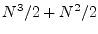 operations.
LU decomposition (decomposition into a lower and upper triangular matrix) is recommended when dealing with equation systems where the matrix A does not alter but the right hand side (the vector z) does. Both the Gaussian elimination and the Gauss-Jordan method involve both the right hand side and the matrix in their algorithm. Consecutive solutions of an equation system with an altering right hand side can be computed faster with LU decomposition.
The LU decomposition splits a matrix A into a product of a lower triangular matrix L with an upper triangular matrix U.
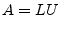 with  and 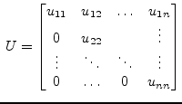 and 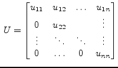 |
(15.75) |
The algorithm for solving the linear equation system 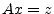 involves three steps:
The decomposition of the matrix A into a lower and upper triangular matrix is not unique. The most important decompositions, based on Gaussian elimination, are the Doolittle, the Crout and the Cholesky decomposition.
If pivoting is necessary during these algorithms they do not decompose
the matrix  but the product with an arbitrary matrix (a
permutation of the matrix
but the product with an arbitrary matrix (a
permutation of the matrix  ). When exchanging rows and columns the
order of the unknowns as represented by the vector
). When exchanging rows and columns the
order of the unknowns as represented by the vector  changes as well
and must be saved during this process for the forward substitution in
the algorithms second step.
changes as well
and must be saved during this process for the forward substitution in
the algorithms second step.
Using the decomposition according to Crout the coefficients of the L and U matrices can be stored in place the original matrix A. The upper triangular matrix U has the form
The diagonal elements are ones and thus the determinant is one as well. The elements of the new coefficient matrix  for the k-th elimination step with
compute as
follows:
for the k-th elimination step with
compute as
follows:
| (15.77) | ||||
| (15.78) |
Pivoting may be necessary as you are going to divide by the diagonal element .
The solutions in the arbitrary vector are obtained by forward
substituting into the triangulated  matrix. At this stage you need
to remember the order of unknowns in the vector
matrix. At this stage you need
to remember the order of unknowns in the vector  as changed by
pivoting. The elements of the solution vector are computed by the
following recursive equation.
as changed by
pivoting. The elements of the solution vector are computed by the
following recursive equation.
| (15.79) |
The solutions in the vector  are obtained by backward substituting
into the triangulated
are obtained by backward substituting
into the triangulated  matrix. The elements of the solution vector
matrix. The elements of the solution vector
 are computed by the following recursive equation.
are computed by the following recursive equation.
| (15.80) |
The division by the diagonal elements of the matrix U is not necessary because of Crouts definition in eq. (15.76) with .
The LU decomposition requires approximately
operations for solving a linear equation system. For  consecutive
solutions the method requires
operations.
consecutive
solutions the method requires
operations.
Singular matrices actually having a solution are over- or
under-determined. These types of matrices can be handled by three
different types of decompositions: Householder, Jacobi (Givens
rotation) and singular value decomposition. Householder decomposition
factors a matrix  into the product of an orthonormal matrix
into the product of an orthonormal matrix  and
an upper triangular matrix
and
an upper triangular matrix  , such that:
, such that:
| (15.81) |
The Householder decomposition is based on the fact that for any two different vectors, and , with , i.e. different vectors of equal length, a reflection matrix exists such that:
| (15.82) |
To obtain the matrix , the vector  is defined by:
is defined by:
| (15.83) |
The matrix defined by
is then the required reflection matrix.
The equation system
| (15.85) |
With this yields
| (15.86) |
Since  is triangular the equation system is solved by a simple
matrix-vector multiplication on the right hand side and backward
substitution.
is triangular the equation system is solved by a simple
matrix-vector multiplication on the right hand side and backward
substitution.
Starting with , let = the first column of , and , i.e. a column vector whose first component is the norm of with the remaining components equal to 0. The Householder transformation with will turn the first column of into as with . At each stage , = the kth column of on and below the diagonal with all other components equal to 0, and 's kth component equals the norm of with all other components equal to 0. Letting , the components of the kth column of below the diagonal are each 0. These calculations are listed below for each stage for the matrix A.
| (15.87) |
With this first step the upper left diagonal element of the  matrix,
, has been generated. The
elements below are zeroed out. Since can be generated from
stored in place of the first column of the multiplication
can be performed without actually generating .
matrix,
, has been generated. The
elements below are zeroed out. Since can be generated from
stored in place of the first column of the multiplication
can be performed without actually generating .
| (15.88) |
These elimination steps generate the  matrix because
matrix because  is
orthonormal, i.e.
is
orthonormal, i.e.
| (15.89) |
After  elimination steps the original matrix
elimination steps the original matrix  contains the upper
triangular matrix
contains the upper
triangular matrix  , except for the diagonal elements which can be
stored in some vector. The lower triangular matrix contains the
Householder vectors
.
, except for the diagonal elements which can be
stored in some vector. The lower triangular matrix contains the
Householder vectors
.
| (15.90) |
With
this representation
contains both the  and
and  matrix, in a packed form, of course:
matrix, in a packed form, of course:  as a composition of Householder vectors and
as a composition of Householder vectors and  in the upper
triangular part and its diagonal vector .
in the upper
triangular part and its diagonal vector .
In order to form the right hand side let remember eq. (15.84) denoting the reflection matrices used to compute .
| (15.91) |
Thus it is possible to replace the original right hand side vector  by
by
| (15.92) |
which yields for each the following expression:
The latter is a simple scalar product of two vectors. Performing eq. (15.93) for each Householder vector finally results in the new right hand side vector .
The solutions in the vector  are obtained by backward substituting
into the triangulated
are obtained by backward substituting
into the triangulated  matrix. The elements of the solution vector
matrix. The elements of the solution vector
 are computed by the following recursive equation.
are computed by the following recursive equation.
| (15.94) |
Though the QR decomposition has an operation count of
 (which is about six times more than the LU decomposition) it has its
advantages. The QR factorization method is said to be unconditional
stable and more accurate. Also it can be used to obtain the
minimum-norm (or least square) solution of under-determined equation
systems.
(which is about six times more than the LU decomposition) it has its
advantages. The QR factorization method is said to be unconditional
stable and more accurate. Also it can be used to obtain the
minimum-norm (or least square) solution of under-determined equation
systems.
The circuit in fig. 15.3 has the following MNA representation:
| (15.95) |
The second and third row of the matrix  are linear dependent and
the matrix is singular because its determinant is zero. Depending on
the right hand side
are linear dependent and
the matrix is singular because its determinant is zero. Depending on
the right hand side  , the equation system has none or unlimited
solutions. This is called an under-determined system. The discussed
QR decomposition easily computes a valid solution without reducing
accuracy. The LU decomposition would probably fail because of the
singularity.
, the equation system has none or unlimited
solutions. This is called an under-determined system. The discussed
QR decomposition easily computes a valid solution without reducing
accuracy. The LU decomposition would probably fail because of the
singularity.
With some more effort it is possible to obtain the minimum-norm solution of this problem. The algorithm as described here would probably yield the following solution:
| (15.96) |
This is one out of unlimited solutions. The following short description shows how it is possible to obtain the minimum-norm solution. When decomposing the transposed problem
| (15.97) |
the minimum-norm solution is obtained by forward substitution of
| (15.98) |
and multiplying the result with  .
.
| (15.99) |
In the example above this algorithm results in a solution vector with the least vector norm possible:
| (15.100) |
This algorithm outline is also sometimes called LQ decomposition because of being a lower triangular matrix used by the forward substitution.
Very bad conditioned (ratio between largest and smallest eigenvalue) matrices, i.e. nearly singular, or even singular matrices (over- or under-determined equation systems) can be handled by the singular value decomposition (SVD). This type of decomposition is defined by
where the  matrix consists of the orthonormalized eigenvectors
associated with the eigenvalues of
, consists of the
orthonormalized eigenvectors of
and is a matrix
with the singular values of
matrix consists of the orthonormalized eigenvectors
associated with the eigenvalues of
, consists of the
orthonormalized eigenvectors of
and is a matrix
with the singular values of  (non-negative square roots of the
eigenvalues of
) on its diagonal and zeros otherwise.
(non-negative square roots of the
eigenvalues of
) on its diagonal and zeros otherwise.
 |
(15.102) |
The singular value decomposition can be used to solve linear equation systems by simple substitutions
| (15.103) | ||
| (15.104) | ||
| (15.105) |
| (15.106) |
To obtain the decomposition stated in eq. (15.101) Householder
vectors are computed and their transformations are applied from the
left-hand side and right-hand side to obtain an upper bidiagonal
matrix  which has the same singular values as the original
which has the same singular values as the original  matrix because all of the transformations introduced are orthogonal.
matrix because all of the transformations introduced are orthogonal.
| (15.107) |
Specifically,
annihilates the subdiagonal elements in
column and zeros out the appropriate elements in row
 .
.
| (15.108) |
Afterwards an iterative process (which turns out to be a QR iteration)
is used to transform the bidiagonal matrix  into a diagonal form by
applying successive Givens transformations (therefore orthogonal as
well) to the bidiagonal matrix. This iteration is said to have cubic
convergence and yields the final singular values of the matrix
into a diagonal form by
applying successive Givens transformations (therefore orthogonal as
well) to the bidiagonal matrix. This iteration is said to have cubic
convergence and yields the final singular values of the matrix  .
.
| (15.109) |
| (15.110) |
Each of the transformations applied to the bidiagonal matrix is also
applied to the matrices and which finally yield the  and matrices after convergence.
and matrices after convergence.
So far for the algorithm outline. Without the very details the following sections briefly describe each part of the singular value decomposition.
Beforehand some notation marks are going to be defined.
A Householder matrix is an elementary unitary matrix that is
Hermitian. Its fundamental use is their ability to transform a vector
 to a multiple of , the first column of the identity
matrix. The elementary Hermitian (i.e. the Householder matrix) is
defined as
to a multiple of , the first column of the identity
matrix. The elementary Hermitian (i.e. the Householder matrix) is
defined as
| (15.111) |
Beside excellent numerical properties, their application demonstrates
their efficiency. If  is a matrix, then
is a matrix, then
| (15.112) | ||
In order to reduce a 4 4 matrix
4 matrix  to upper triangular form
successive Householder reflectors must be applied.
to upper triangular form
successive Householder reflectors must be applied.
| (15.113) |
In the first step the diagonal element gets replaced and its below elements get annihilated by the multiplication with an appropriate Householder vector, also the remaining right-hand columns get modified.
| (15.114) |
This process must be repeated
| (15.115) |
| (15.116) |
| (15.117) |
until the matrix  contains an upper triangular matrix
contains an upper triangular matrix  . The
matrix
. The
matrix  can be expressed as the the product of the Householder
vectors. The performed operations deliver
can be expressed as the the product of the Householder
vectors. The performed operations deliver
| (15.118) |
since  is unitary. The matrix
is unitary. The matrix  itself can be expressed in terms
of using the following transformation.
itself can be expressed in terms
of using the following transformation.
The eqn. (15.119)-(15.121) are necessary to be mentioned
only in case  is not Hermitian, but still unitary. Otherwise there
is no difference computing
is not Hermitian, but still unitary. Otherwise there
is no difference computing  or
or  using the Householder vectors.
No care must be taken in choosing forward or backward accumulation.
using the Householder vectors.
No care must be taken in choosing forward or backward accumulation.
In the general case it is necessary to find an elementary unitary matrix
| (15.122) |
When choosing the elements
it is possible the store the
Householder vectors as well as the upper triangular matrix  in the
same storage of the matrix
in the
same storage of the matrix  . The Householder matrices can be
completely restored from the Householder vectors.
. The Householder matrices can be
completely restored from the Householder vectors.
| (15.124) |
There exist several approaches to meet the conditions expressed in
eq. (15.123). For fewer computational effort it may be
convenient to choose  to be real valued. With the notation
to be real valued. With the notation
| (15.125) |
one possibility is to define the following calculation rules.
| (15.126) | ||
| (15.127) | ||
| (15.128) | ||
| (15.129) | ||
| (15.130) |
These definitions yield a complex  , thus is no more
Hermitian but still unitary.
, thus is no more
Hermitian but still unitary.
| (15.131) |
A Givens rotation is a plane rotation matrix. Such a plane rotation matrix is an orthogonal matrix that is different from the identity matrix only in four elements.
The elements are usually chosen so that
The most common use of such a plane rotation is to choose  and
and  such that for a given and
such that for a given and 
| (15.135) |
| (15.136) |
The eigenvalues of a 2-by-2 matrix
| (15.137) |
can be obtained directly from the quadratic formula. The characteristic polynomial is
| (15.138) |
The polynomial yields the two eigenvalues.
For a symmetric matrix  (i.e. ) eq.(15.139) can
be rewritten to:
(i.e. ) eq.(15.139) can
be rewritten to:
In the first step the original matrix  is bidiagonalized by the
application of Householder reflections from the left and right hand
side. The matrices and can each be determined as a
product of Householder matrices.
is bidiagonalized by the
application of Householder reflections from the left and right hand
side. The matrices and can each be determined as a
product of Householder matrices.
| (15.141) |
Each of the required Householder vectors are created and applied as previously defined. Suppose a matrix, then applying the first Householder vector from the left hand side eliminates the first column and yields
| (15.142) | ||
|
Next, a Householder vector is applied from the right hand side to annihilate the first row.
| ||
| (15.143) | ||
|
Again, a Householder vector is applied from the left hand side to annihilate the second column.
| ||
| (15.144) | ||
|
This process is continued until
| ||
 |
(15.145) | |
For each of the Householder transformations from the left and right
hand side the appropriate  values must be stored in separate
vectors.
values must be stored in separate
vectors.
Using the Householder vectors stored in place of the original  matrix and the appropriate
matrix and the appropriate  value vectors it is now necessary to
unpack the and matrices. The diagonal vector
value vectors it is now necessary to
unpack the and matrices. The diagonal vector  and the super-diagonal vector
and the super-diagonal vector  can be saved in separate
vectors previously. Thus the matrix can be unpacked in place of
the
can be saved in separate
vectors previously. Thus the matrix can be unpacked in place of
the  matrix and the matrix is unpacked in a separate
matrix.
matrix and the matrix is unpacked in a separate
matrix.
There are two possible algorithms for computing the Householder product matrices, i.e. forward accumulation and backward accumulation. Both start with the identity matrix which is successively multiplied by the Householder matrices either from the left or right.
| (15.146) | ||
| (15.147) |
Recall that the leading portion of each Householder matrix is the
identity except the first. Thus, at the beginning of backward
accumulation, is ``mostly the identity'' and it gradually
becomes full as the iteration progresses. This pattern can be
exploited to reduce the number of required flops. In contrast,
is full in forward accumulation after the first step. For
this reason, backward accumulation is cheaper and the strategy of
choice. When unpacking the matrix in place of the original  matrix it is necessary to choose backward accumulation anyway.
matrix it is necessary to choose backward accumulation anyway.
| (15.148) | ||
| (15.149) |
Unpacking the matrix is done in a similar way also performing successive Householder matrix multiplications using backward accumulation.
At this stage the matrices and exist in unfactored form.
Also there are the diagonal vector  and the super-diagonal
vector
and the super-diagonal
vector  . Both vectors are real valued. Thus the following
algorithm can be applied even though solving a complex equation
system.
. Both vectors are real valued. Thus the following
algorithm can be applied even though solving a complex equation
system.
| (15.150) |
The remaining problem is thus to compute the SVD of the matrix  .
This is done applying an implicit-shift QR step to the tridiagonal
matrix which is a symmetric. The matrix
.
This is done applying an implicit-shift QR step to the tridiagonal
matrix which is a symmetric. The matrix  is not
explicitly formed that is why a QR iteration with implicit shifts is
applied.
is not
explicitly formed that is why a QR iteration with implicit shifts is
applied.
After bidiagonalization we have a bidiagonal matrix :
| (15.151) |
The presented method turns into a matrix by applying a set of orthogonal transforms
The orthogonal matrices and are chosen so that is also a bidiagonal matrix, but with the super-diagonal elements smaller than those of . The eq.(15.152) is repeated until the non-diagonal elements of become smaller than and can be disregarded.
The matrices and are constructed as
| (15.153) |
and similarly where and are matrices of simple rotations as given in eq.(15.132). Both and are products of Givens rotations and thus perform orthogonal transforms.
The left multiplication of by replaces two rows of by their linear combinations. The rest of is unaffected. Right multiplication of by similarly changes only two columns of .
A matrix is chosen the way that
| (15.154) |
is a QR transform with a shift. Note that multiplying by gives rise to a non-zero element which is below the main diagonal.
| (15.155) |
A new rotation angle is then chosen so that multiplication by gets rid of that element. But this will create a non-zero element which is right beside the super-diagonal.
| (15.156) |
Then is made to make it disappear, but this leads to another non-zero element below the diagonal, etc.
| (15.157) |
In the end, the matrix
becomes bidiagonal
again. However, because of a special choice of
(QR
algorithm), its non-diagonal elements are smaller than those of  .
.
Please note that each of the transforms must also be applied to the unfactored and matrices which turns them successively into and
For a single QR step the computation of the eigenvalue of the trailing 2-by-2 submatrix of that is closer to the matrix element is required.
| (15.158) | ||
| (15.159) |
The required eigenvalue is called Wilkinson shift, see eq.(15.140) for details. The sign for the eigenvalue is chosen such that it is closer to .
| (15.160) | ||
| (15.161) | ||
| (15.162) |
| (15.163) |
The Givens rotation is chosen such that
| (15.164) |
The special choice of this first rotation in the single QR step ensures that the super-diagonal matrix entries get smaller. Typically, after a few of these QR steps, the super-diagonal entry becomes negligible.
The QR iteration described above claims to hold if the underlying bidiagonal matrix is unreduced, i.e. has no zeros neither on the diagonal nor on the super-diagonal.
When there is a zero along the diagonal, then premultiplication by a sequence of Givens transformations can zero the right-hand super-diagonal entry as well. The inverse rotations must be applied to the matrix.
Thus the problem can be decoupled into two smaller matrices and . The diagonal matrix is successively getting larger for each super-diagonal entry being neglected after the QR iterations.
| (15.165) |
Matrix has non-zero super-diagonal entries. If there is any zero diagonal entry in , then the super-diagonal entry can be annihilated as just described. Otherwise the QR iteration algorithm can be applied to .
When there are only matrix entries left (diagonal entries only)
the algorithm is finished, then the  matrix has been transformed
into the singular value matrix .
matrix has been transformed
into the singular value matrix .
It is straight-forward to solve a given equation system once having the singular value decomposition computed.
| (15.166) | ||
| (15.167) | ||
| (15.168) | ||
| (15.169) | ||
| (15.170) |
The inverse of the diagonal matrix yields
| (15.171) |
With being the i-th row of the matrix , the i-th column
of the matrix  and the i-th singular value
eq. (15.170) can be rewritten to
and the i-th singular value
eq. (15.170) can be rewritten to
| (15.172) |
It must be mentioned that very small singular values
corrupt the complete result. Such values indicate (nearly) singular
(ill-conditioned) matrices  . In such cases, the solution vector
. In such cases, the solution vector
 obtained by zeroing the small 's and then using equation
(15.170) is better than direct-method solutions (such
as LU decomposition or Gaussian elimination) and the SVD solution
where the small 's are left non-zero. It may seem
paradoxical that this can be so, since zeroing a singular value
corresponds to throwing away one linear combination of the set of
equations that is going to be solved. The resolution of the paradox
is that a combination of equations that is so corrupted by roundoff
error is thrown away precisely as to be at best useless; usually it is
worse than useless since it "pulls" the solution vector way off
towards infinity along some direction that is almost a nullspace
vector.
obtained by zeroing the small 's and then using equation
(15.170) is better than direct-method solutions (such
as LU decomposition or Gaussian elimination) and the SVD solution
where the small 's are left non-zero. It may seem
paradoxical that this can be so, since zeroing a singular value
corresponds to throwing away one linear combination of the set of
equations that is going to be solved. The resolution of the paradox
is that a combination of equations that is so corrupted by roundoff
error is thrown away precisely as to be at best useless; usually it is
worse than useless since it "pulls" the solution vector way off
towards infinity along some direction that is almost a nullspace
vector.
This method quite simply involves rearranging each equation to make each variable a function of the other variables. Then make an initial guess for each solution and iterate. For this method it is necessary to ensure that all the diagonal matrix elements are non-zero. This is given for the nodal analysis and almostly given for the modified nodal analysis. If the linear equation system is solvable this can always be achieved by rows substitutions.
The algorithm for performing the iteration step writes as follows.
| (15.173) |
This has to repeated until the new solution vectors deviation from the previous one is sufficiently small.
The initial guess has no effect on whether the iterative method converges or not, but with a good initial guess (as possibly given in consecutive Newton-Raphson iterations) it converges faster (if it converges). To ensure convergence the condition
| (15.174) |
and at least one case
| (15.175) |
must apply. If these conditions are not met, the iterative equations may still converge. If these conditions are met the iterative equations will definitely converge.
Another simple approach to a convergence criteria for iterative algorithms is the Schmidt and v. Mises criteria.
| (15.176) |
The Gauss-Seidel algorithm is a modification of the Jacobi method. It uses the previously computed values in the solution vector of the same iteration step. That is why this iterative method is expected to converge faster than the Jacobi method.
The slightly modified algorithm for performing the iteration step writes as follows.
| (15.177) |
The remarks about the initial guess as well as the convergence criteria noted in the section about the Jacobi method apply to the Gauss-Seidel algorithm as well.
There are direct and iterative methods (algorithms) for solving linear equation systems. Equation systems with large and sparse matrices should rather be solved with iterative methods.
| method |
precision |
application |
programming effort |
computing complexity |
notes
|
| Laplace expansion |
numerical errors |
general |
straight forward |
|
very time consuming
|
| Gaussian elimination |
numerical errors |
general |
intermediate |
|
|
| Gauss-Jordan |
numerical errors |
general |
intermediate |
|
computes the inverse besides
|
| LU decomposition |
numerical errors |
general |
intermediate |
|
useful for consecutive solutions
|
| QR decomposition |
good |
general |
high |
|
|
| Singular value decomposition |
good |
general |
very high |
|
ill-conditioned matrices can be handled
|
| Jacobi |
very good |
diagonally dominant systems |
easy |
in each iteration step |
possibly no convergence
|
| Gauss-Seidel |
very good |
diagonally dominant systems |
easy |
in each iteration step |
possibly no convergence
|